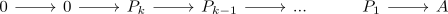
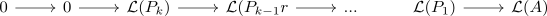

tor functor and projective resolution of length
Proposition
Let $\mathcal{A}, \mathcal{B}$ be abelian categories, $\mathcal{F}: \mathcal{A} \rightarrow \mathcal{B}$ a right exact functor. Suppose $A \in \mathcal{A}$ is an object, which admits a projective resolution of length $\leq k$, then for the left derived functor
\begin{align*}
\mathcal{LF}_n(A) = 0
\end{align*}
for $n > k$
Proof
follows from the construction of the left derived functor, as by assumpiton there exists a projective resolution

since the right exact functor preserves zero morphisms it follows that

where
\begin{align*}
\mathcal{LF}_n(A) =& H_n(\mathcal{L}(P_* \rightarrow A)) \\
=& 0
\end{align*}